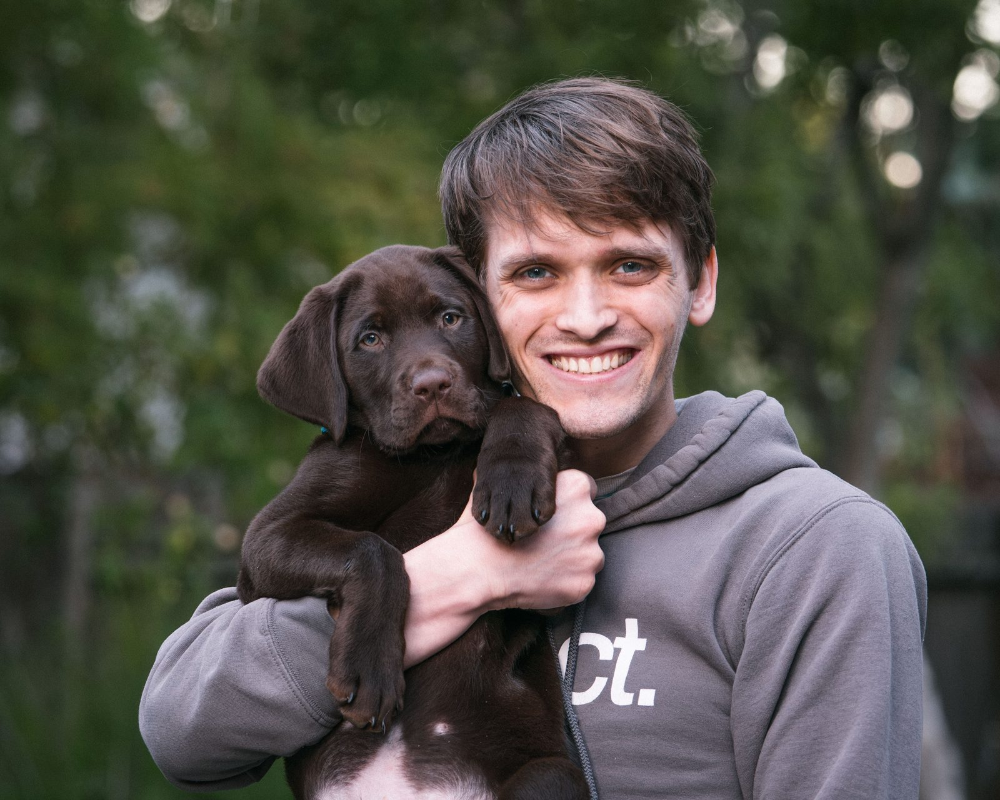
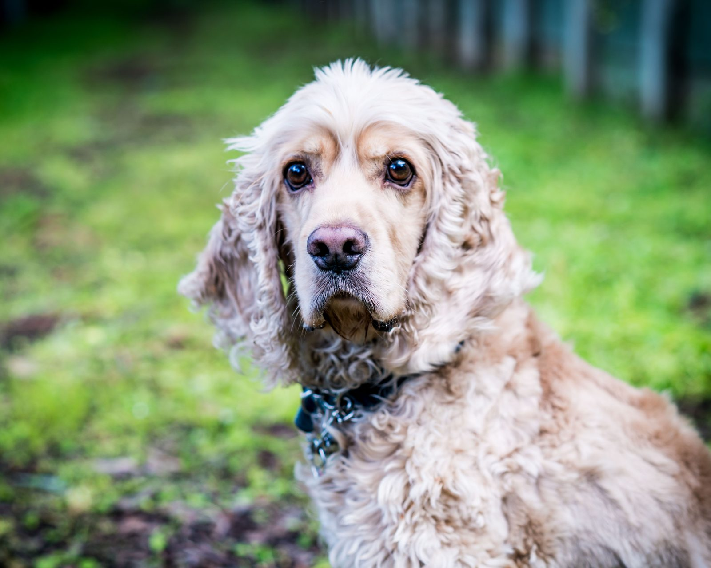
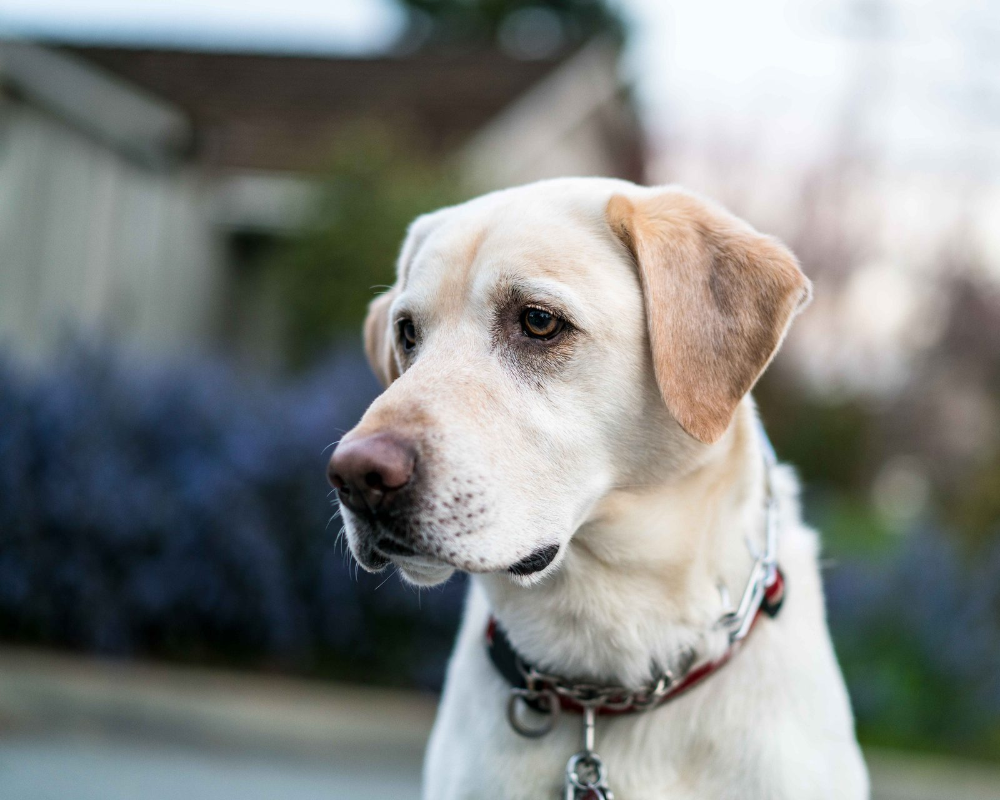
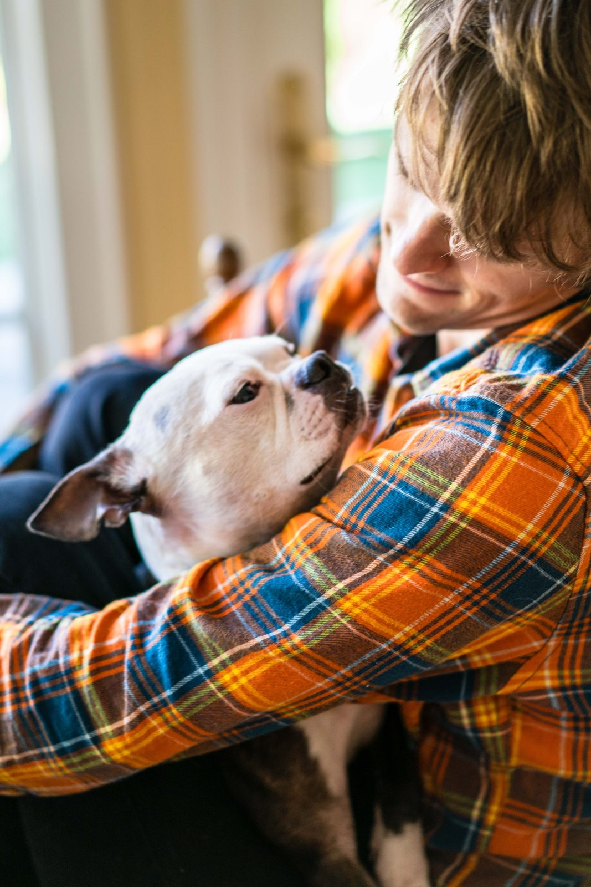
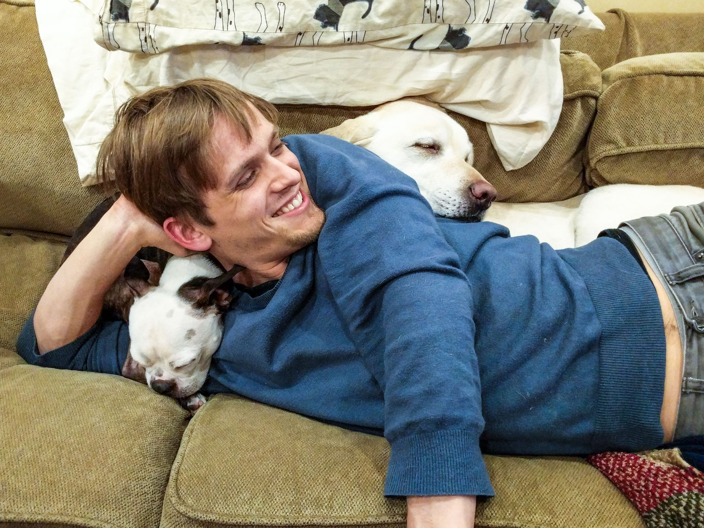

Dog walking & home visits · Los Altos, CA
A patient walk, at your dog's pace.
I come to your home during the week to walk, feed, and/or keep your dog company. Nervous dogs, senior dogs, and dogs who need a little extra time are welcome — they're what I'm best at.
Weekday mornings and afternoons · Every size, every age

Visits & rates
You pick what your dog needs.
Every dog is different, so nothing here is a package deal. Tell me what your day looks like and we'll settle on a visit that fits it.
-
Walk — 30 minutes
$30Out on the street or the trail, on your dog's terms. Exercise, sniffing, and a bathroom stop, all at whatever pace they can handle.
-
Walk — 60 minutes
$50For dogs who need real mileage before they'll settle. Longer route, more sniffing, and time to work on anything you'd like me to reinforce.
-
Home visit — 30 minutes
$30For dogs who'd rather not go far. Company on the floor, a meal or medication on your schedule, and a trip to the yard.
-
Quick bathroom break — 15 minutes
$20Sometimes the day just runs long. A short trip outside so nobody has to hold it until six.
-
Each additional dog in the same home
+$10Same visit, more hands-on time. I keep multi-dog walks to households that already live together unless you tell me otherwise.
No weight limit and no surcharge for hard cases. Big dogs, senior dogs, blind or deaf dogs, dogs on medication, dogs who need a slow introduction to a new person.
One-on-one, always. No other clients' dogs join your dog's walk or visit — the only exception is dogs who already live together. It's the reason a solo visit costs more than a group walk, and the reason your dog gets my full attention the entire time.


How I walk
I'm watching the whole street, not just the leash.
The loose dog up ahead. The kid who wants to say hi. The jogger coming around the corner. I see those before your dog does, and I plan around them.
I'm reading your dog the entire time, too. A stiff tail, a hard stare, a sudden freeze, a shift to the far side of the sidewalk — those all mean something, and they change what we do next. Most trouble on a walk is avoidable if you notice it thirty seconds early.
The other half is knowing when nothing's wrong. If your dog wants to play, I'll play. If your dog wants to stand still and smell one bush for four minutes, that's a good walk too.
A walk should end with a dog who's tired, not a dog who's rattled.
The two who taught me
My experience came from living with it.
I've looked after dogs of every size and age, but the specialized care I'm most confident about came from my own two.
Strong, and delighted about it
He taught me how to handle a big dog who could pull me over if I let him — and how to keep that from ever becoming a contest.
He taught me everything else
Getting a blind dog through a house and down a sidewalk takes patience, narration, and constant attention. Special needs care isn't a line on a list for me. It's my Tuesday.


What owners say
One of the people who's handed me their keys.
Gabe Rhodes has taken care of our 15 year old Cocker Spaniel, Bear, with many medical problems and medications for several years. In addition, Gabe has even taken care of my daughter's dogs when they visit, and they adore him as well! I have always felt comfortable leaving, and knew that with Gabe there, Bear was very well cared for. Gabe is careful, trustworthy and kind, and thoughtfully gives Bear a fun experience while we are away! It's such a joy to be able to leave and know that Bear is going to happy and in great hands!! I highly recommend Gabe Rhodes.Marty W.
Bear, Cocker Spaniel
Where and when
Weekdays, while you're at work and your dog is watching the door.
I'm based in Los Altos and I travel about ten miles out — Los Altos Hills, Mountain View, Sunnyvale, and parts of San Jose. If you're just past that line, ask anyway; it depends on the day.
I'm filling out my weekday schedule with the work I actually want to be doing. My own dogs have plenty of support at home, so my time and attention go to yours.
Morning and afternoon are wide open. If you need something outside that, feel free to ask.
Get in touch
Tell me about your dog.
Name, size, age, and anything that makes them nervous. If there's a route they love or a stranger they hate, I want to know that first. We'll start with a short meet and greet at your place, free, so your dog sees me once before they're ever alone with me.
- Emailgabrielcrhodes@gmail.com
- Phone650-867-1296
- AreaLos Altos and about ten miles out — Los Altos Hills, Mountain View, Sunnyvale, and parts of San Jose
- HoursMonday to Friday, morning through late afternoon